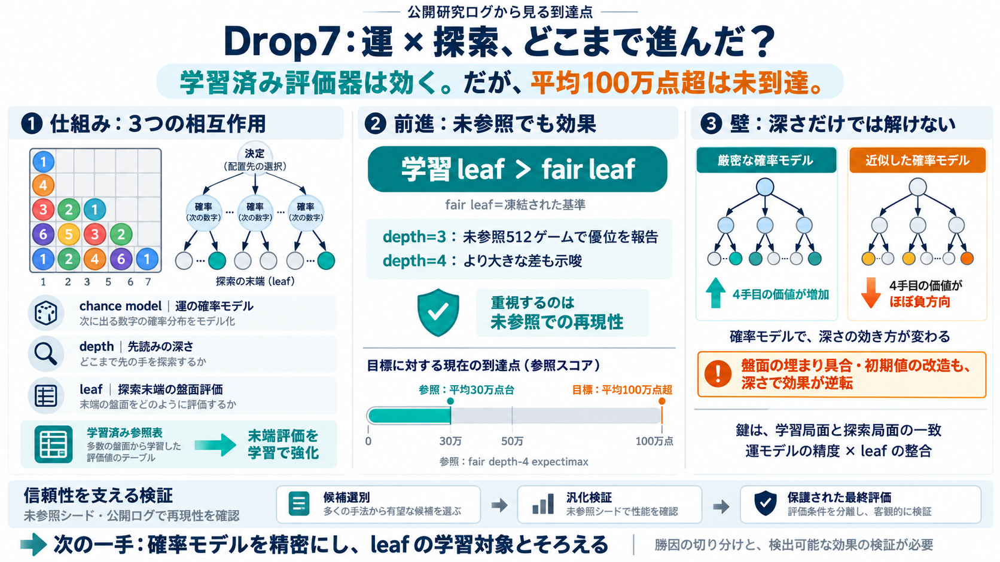

Drop7 is a simple puzzle game that combines strategy and ...
Drop7 is a puzzle game played on a 7x7 board. On each turn, you drop numbered discs into the board, and discs explode if…

Drop7 is a puzzle game played on a 7x7 board. On each turn, you drop numbered discs into the board, and discs explode if…
Drop7 is a puzzle game about numbers, puzzle games need seven times more ways to destroy arbitrary objects. The game use…
It describes two main strategies: the "Survivalist" strategy which focuses on clearing the board and level bonuses, and …
Drop 7 is a simple yet addictive ball-popping puzzle: drop numbered balls onto a 7-column board; when the balls lined up…
How Zynga destroyed the greatest mobile puzzle game of all time. Drop7: how Zynga destroyed the best mobile puzzle game …